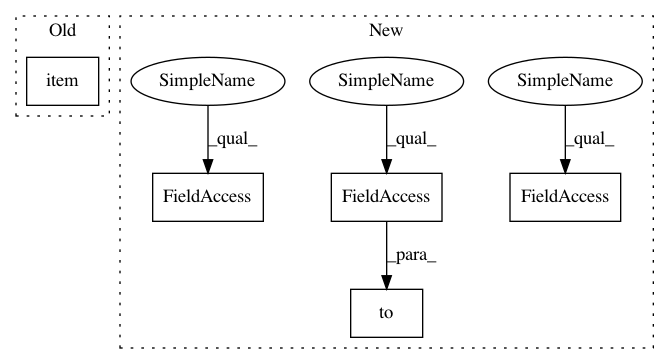

ff9c1dac887643e464f5f829c7d8b920b0aa8140,rllib/agents/ddpg/ddpg_torch_policy.py,,ddpg_actor_critic_loss,#Any#Any#Any#Any#,30
Before Change
std=policy.config["target_noise"]), -target_noise_clip,
target_noise_clip)
policy_tp1_smoothed = torch.clamp(policy_tp1 + clipped_normal_sample,
policy.action_space.low.item(0),
policy.action_space.high.item(0))
else:
// No smoothing, just use deterministic actions.
After Change
if policy.config["smooth_target_policy"]:
target_noise_clip = policy.config["target_noise_clip"]
clipped_normal_sample = torch.clamp(
torch.normal(
mean=torch.zeros(policy_tp1.size()),
std=policy.config["target_noise"]).to(policy_tp1.device),
-target_noise_clip,
target_noise_clip)
policy_tp1_smoothed = torch.min(
torch.max(
policy_tp1 + clipped_normal_sample,
torch.tensor(
policy.action_space.low,
dtype=torch.float32,
device=policy_tp1.device)),
torch.tensor(
policy.action_space.high,
dtype=torch.float32,
device=policy_tp1.device))
else:
// No smoothing, just use deterministic actions.
policy_tp1_smoothed = policy_tp1
In pattern: SUPERPATTERN
Frequency: 3
Non-data size: 5
Instances
Project Name: ray-project/ray
Commit Name: ff9c1dac887643e464f5f829c7d8b920b0aa8140
Time: 2020-07-28
Author: sven@anyscale.io
File Name: rllib/agents/ddpg/ddpg_torch_policy.py
Class Name:
Method Name: ddpg_actor_critic_loss
Project Name: ray-project/ray
Commit Name: ff9c1dac887643e464f5f829c7d8b920b0aa8140
Time: 2020-07-28
Author: sven@anyscale.io
File Name: rllib/agents/ddpg/ddpg_torch_policy.py
Class Name:
Method Name: ddpg_actor_critic_loss
Project Name: Alexander-H-Liu/End-to-end-ASR-Pytorch
Commit Name: 41a3e20440c61f4892d7731f89032b53932cce66
Time: 2019-08-14
Author: alexliu36@gmail.com
File Name: src/solver.py
Class Name: Trainer
Method Name: exec
Project Name: ray-project/ray
Commit Name: ff9c1dac887643e464f5f829c7d8b920b0aa8140
Time: 2020-07-28
Author: sven@anyscale.io
File Name: rllib/utils/exploration/gaussian_noise.py
Class Name: GaussianNoise
Method Name: _get_torch_exploration_action